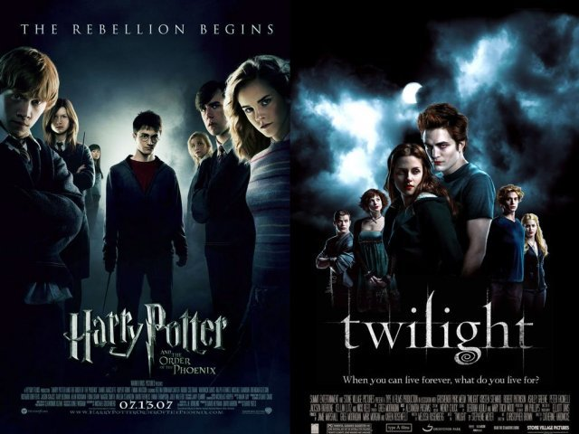

Halo Infinite: Craig, que virou meme, ganhou barba em novo trailer
postado em 25 de Outubro de 2021
O game acaba de receber um novo vídeo que detalha um pouco mais do seu modo campanha, e uma figura já conhecida pela comunidade tornou a dar as caras. Apelidado de "Craig", o personagem se tornou "a cara" de Halo Infinite quando o assunto era zoeira. O inimigo virou meme graças ao seu visual pouco caprichado, e parece que a 343 Industries se esforçou para mudar a situação.
Postado por Lucas LuzImagem inédita de Homem-Aranha 3 revela luta contra o Doutor Octopus
postado em 6 de Janeiro de 2021Homem-Aranha 3 é um filme que expandirá o MULTIVERSO dentro do MCU, assim como realizará um grande desejo dos fãs da Marvel. Afinal, o filme será um verdadeiro evento celebrando toda a história do Miranha nas telonas.Contando com o retorno de antigos atores das versões anteriores, todos voltando a dar vida aos icônicos vilões. O principal deles, com certeza é Alfred Molina, retornando como o Doutor Octopus mais de 15 anos depois de Homem-Aranha 2.
Postado por João LimaGod of War para PC já é o jogo mais vendido em pré-venda na Steam
postado em 20 de Junho de 2021
God of War já é o jogo em pré-venda mais vendido mundialmente na Steam, após ter sido anunciado ontem para o PC, ele é publicado pela Sony e desenvolvido pela Santa Monica Studio, foi lançado originalmente em 2018 para PlayStation 4 e será a primeira vez que a franquia estará presente nos computadores.
Postado por: João Lima‘WHAT IF…?’: SAIBA TUDO SOBRE A SÉRIE ANIMADA DA MARVEL
postado em 15 de outubro de 2021A nova série animada da Marvel Studios, exclusiva do Disney +, What if…? (traduzido para “E se…?” ou “O que aconteceria se…?”) estreou no dia 11 de agosto de 2021 com o episódio What if Captain Carter were the first avenger? (O que aconteceria se a Capitã Carter fosse a primeira vingadora?) e continuou lançando seus episódios semanalmente às quartas até o dia 06 de outubro.
Postado por: João LimaTrailer de The Batman lançado no DC fandome aumenta ainda mais o "hype" para o filme
postado em 20 de Outubro de 2021
O segundo trailer do filme The Batman, dirigido por Matt Reeves e protagonizado por Robert Pattison no manto do homem morcego, foi mostrado no DC fandome e superou as expectativas dos fãs. Trailer cheio de ação e vários vislubres dos personagens que vão aparecer no filme, o trailer aumenta ainda mais o "hype" para o filme que será lançado em 4 de março de 2021. Vamos falar um pouco desse trailer e tudo que sabemos do filme.
Postado por: Felipe LorenzSupergirl: Final da série no Arrowverso terá casamento
postado em 20 de Junho de 2021A CW lançou a sinopse oficial do final de Supergirl. A série do Arrowverso vai terminar com um casamento: de Alex e Kelly.O penúltimo episódio, 19º da sexta temporada, intitulado The Last Gauntlet, prepara o terreno para o fim da série, indicando que uma pessoa amada será sequestrada por Nyxly e Lex.
Postado por:João Lima
GTA Trilogy tem data de lançamento revelada; veja melhorias do remaster
postado em 20 de Junho de 2021
Muitas das mudanças gráficas na trilogia da franquia também foram reveladas no novo trailer divulgado. A Rockstar Games anunciou a data de lançamento do Grand Theft Auto: The Trilogy — Definitive Edition nesta sexta-feira (22). O pacote fica disponível em formato digital no dia 11 de novembro, enquanto a mídia física para consoles chega no dia 7 de dezembro
Postado por:Felipe LorenzHouse of the Dragon, série derivada de Game of Thrones ganha primeiro trailer e deixa fãs animados
postado em 20 de Junho de 2021Uma das séries mais celebradas de todos os tempos, Game Of Thrones, irá ganha um spin-off chamado House Of The Dragon e após a divulgação de algumas imagens a séria finalmente ganha seu primeiro trailer. Veja o trailer oficial e o que já se sabe sobre esta novaatração da HBO
Postado por:Felipe Lorenz
Teoria indica conexão entre Harry Potter e Crepúsculo
postado em 20 de Junho de 2021 Segundo alguns fãs, Crepúsculo e Harry Potter podem ter uma conexão. De acordo com o Comic Book Resources, existe uma teoria que sugere que Jacob Black e Sirius Black poderiam ser irmãos.
Em seu quinto ano em Hogwarts, Sirius ganhou as habilidades de um animago, um bruxo ou bruxa capaz de se transformar em um animal escolhido à vontade.
Postado por João Lima Fonte: observatoriodocinema.uol.com.br
Quer conhecer tudo sobre os filmes e séries recem lançados?
postado em 02 de novembro de 2021
Então aqui é o lugar certo. Sabemos que a industria de cinemas nos pega de surpresa com tantos lançamentos recentes e por vezes com grandes produções sendo adiadas por efeitos da pandemia, portanto clicando no link abaixo você poderá acompanhar tudos sobre os mais recentes lançamentos do mudo do cinema.
Postado por João Lima
Quer conhecer tudo sobre os filmes e séries recem lançados? Clique aqui